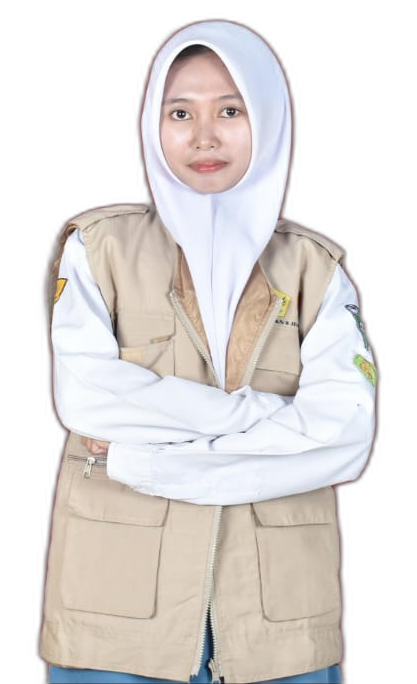
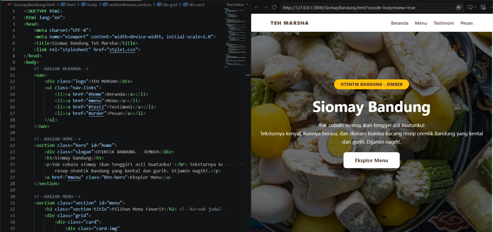
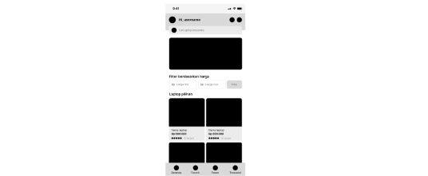
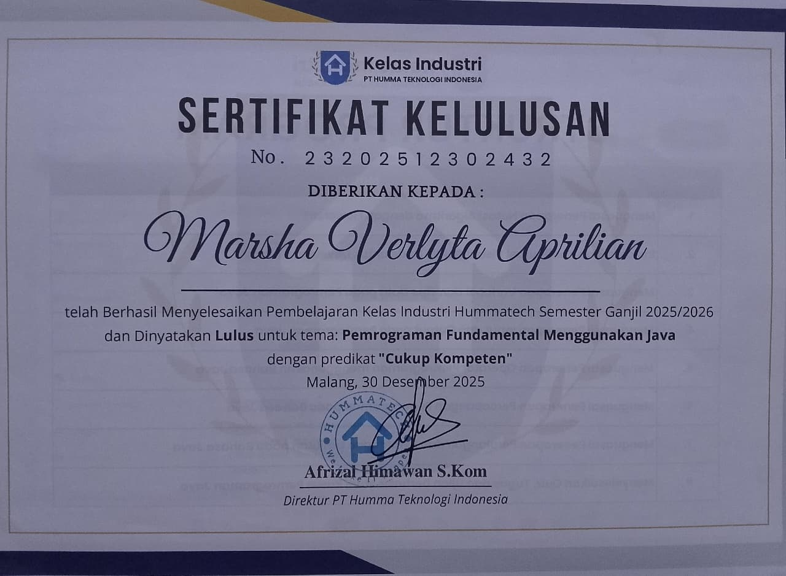
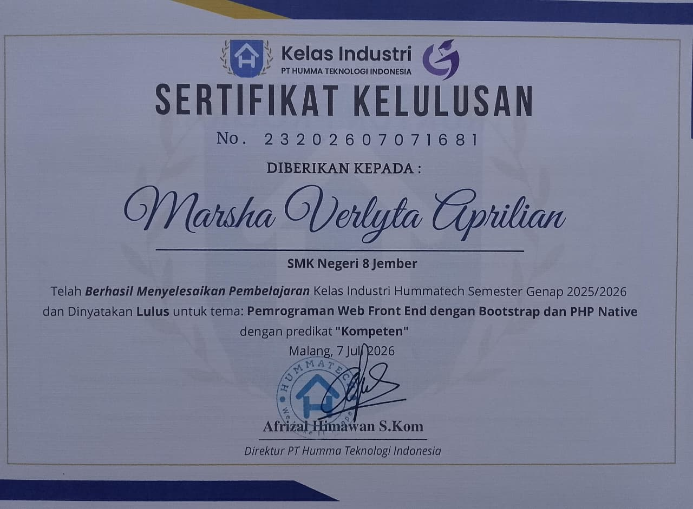

01 / TEKNIS
Hard skills
Lengkapi dengan kemampuan dan alat yang benar-benar kamu kuasai.
- 01Pembuatan website
- 02Desain UI/UX
- 03Perancangan tampilan digital
Pelajar RPL di SMKN 8 Jember yang siap belajar, bertumbuh, dan ikut memberi arti di dunia kerja.

Belajar hari ini, berkarya lebih baik esok.
Saya Marsha Verlyta Aprilian, pelajar jurusan Rekayasa Perangkat Lunak (RPL) di SMKN 8 Jember. Saya tertarik membuat website dan merancang pengalaman serta tampilan antarmuka UI/UX. Melalui Praktik Kerja Lapangan, saya ingin mengenal proses kerja profesional, mengasah kemampuan, dan berkontribusi dengan sungguh-sungguh. Di luar belajar, saya senang menulis, mendengarkan musik, dan membaca.
Setiap pengalaman adalah kesempatan untuk belajar lebih jauh.
02 YANG SAYA BAWA
Kemampuan yang terus saya latih, satu pengalaman pada satu waktu.
Lengkapi dengan kemampuan dan alat yang benar-benar kamu kuasai.
Pilih karakter yang paling menggambarkan cara kamu bekerja.
03 PILIHAN KARYA
Dua proyek yang mewakili hal-hal yang sudah saya pelajari.

KARYALanding page untuk memperkenalkan siomay ikan tenggiri khas Bandung dengan tampilan yang hangat dan menggugah selera. Halaman ini dibuat dari referensi foto praktik, dengan navigasi Beranda, Menu, Testimoni, dan Pesan.

KARYAMerancang tampilan aplikasi katalog laptop yang menyajikan pilihan produk, informasi harga, dan filter kategori dalam antarmuka mobile yang ringkas.
Setiap proyek melatih saya menyusun informasi dan membuat pengalaman digital yang mudah dipahami.
04 SERTIFIKAT
Dokumentasi pembelajaran dan pencapaian yang terus saya kumpulkan.

BUKA SERTIFIKAT
BUKA SERTIFIKAT05 DI LUAR KELAS
Pengalaman ekstrakurikuler
Sebagai bagian dari Tim Media, saya bertugas mendokumentasikan acara dan mengedit buletin menggunakan Figma. Pengalaman ini membantu saya mengembangkan ketelitian dalam mengolah dokumentasi serta menyajikan informasi secara visual.
TUJUAN PRAKTIK KERJA LAPANGAN
Saya berharap dapat memahami ritme dan standar kerja profesional, memperdalam keterampilan di bidang Rekayasa Perangkat Lunak, serta membantu tim melalui tugas yang diberikan dengan sungguh-sungguh, teliti, dan bertanggung jawab.
Mari terhubung